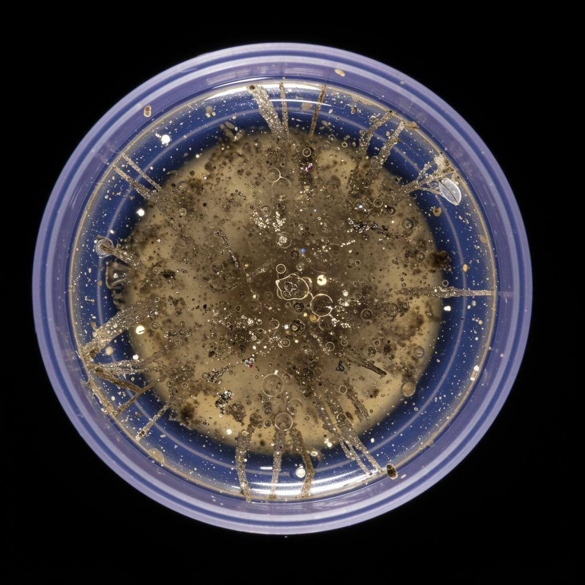

Reverse Osmosis vs Ultrafiltration: Microplastic Removal
Both reverse osmosis (RO) and ultrafiltration (UF) block microplastics easily — the pore sizes are far smaller than any microplastic particle. The real difference is what else they do: RO strips almost everything, including minerals, and wastes water; UF keeps minerals and runs at full pressure.

Bottled Water in America: Brands, Safety, and Smarter Choices
Americans drink more bottled water than milk, beer, or soda — about 47 gallons per person per year. Most major brands meet FDA rules, but quality, source, and microplastic content vary widely. This guide shows what to buy, what to skip, and how to drink it smarter.

Microplastics Research: Sources, Exposure & Latest Studies
Microplastics are plastic fragments under 5 mm that now show up in tap water, bottled water, food, air, and human tissue. Peer-reviewed studies link exposure mainly to packaging, textiles, tire wear, and bottled water. This hub summarizes what the science confirms — and what it does not.

Bottled Water Guide: Brands, Safety & Smarter US Habits
Americans drink about 16 billion gallons of bottled water a year, but most don't know what "spring," "purified," or "artesian" actually mean on the label. This guide decodes the terms, compares the major brands, explains the FDA rules, and shows you how to drink smarter when bottled water is unavoidable.
On-the-Go Water Filtration: A Practical Guide to Filter Bottles, Caps and Portable Solutions
Portable water filters split into five real categories: filter bottles, screw-on cap filters, straw filters, pump/gravity filters and UV pens. Each removes different things. Pick by what's in your water and where you drink it — not by marketing claims.

How to Reduce Microplastic Exposure: Everyday Guide
Microplastics are everywhere — in bottled water, food packaging, dust, and laundry lint. You can cut your daily exposure significantly with small, repeatable swaps: filter the water you drink, change how you heat food, and rethink a few household habits.

On-the-Go Microplastic Filters: The Cap That Turns Any Bottle Into a Filtered One
Every plastic bottle of water contains microplastics. A cap-style microplastic filter screws onto the standard bottle thread (DIN 1881) and filters them out as you drink. No new bottle, no pitcher, no plumbing.

Clear Flow Water Bottle Filter: The Complete Product Guide
Clear Flow is a screw-on cap filter that removes microplastics from any standard DIN 1881 plastic bottle. This guide covers bottle fit, first-time setup, daily use, cleaning, and when to reorder — so you can drink the bottled water you already buy, just cleaner.

Microplastics Health Effects: What Science Shows in 2025
Peer-reviewed studies in 2024-2025 detected microplastics in human blood, placentas, brains, and arterial plaque. Documented effects include inflammation, oxidative stress, and endocrine disruption — with cardiovascular risk now linked in clinical data.

How Microplastics Get Into Bottled Water (5 Real Sources)
Microplastics get into bottled water in five main ways: the bottling process itself, friction from the cap, heat exposure during transport, long shelf storage, and the act of opening and drinking. The plastic bottle is both container and source.

How Many Microplastics Are in a Bottle of Water?
A 2024 Columbia University study found an average of 240,000 plastic particle fragments per liter of bottled water — roughly 100x more than earlier estimates. Most are nanoplastics, too small to see or taste.

Microplastics and Drinking Water: Where the FDA and EPA Stand
Neither the FDA nor the EPA currently sets a legal limit for microplastics in bottled or tap water in the US. The FDA regulates bottled water as a packaged food, the EPA regulates tap water — and both are still studying microplastics, not enforcing limits.

Can You See Microplastics in Water? The Honest Answer
No — you almost never can. Most microplastics are smaller than a human hair, and nanoplastics are invisible even under a regular microscope. Clear water is not proof of clean water.
Bottled Water vs Tap Water: Which Actually Has More Microplastics?
Bottled water typically contains 10 to 100 times more microplastic particles than tap water. The plastic bottle itself is the main source. If you drink bottled, the easiest fix is filtering at the cap.

Which Bottled Water Brands Have the Most Microplastics?
Independent lab tests found microplastic particles in nearly every major bottled water brand sold in the US — including Aquafina, Dasani, Fiji and Nestlé Pure Life. The differences between brands are smaller than you'd hope, which is why a cap-style filter beats brand-switching.

Are Microplastics in Water Bad for You? What Research Says
Researchers have found microplastics in human blood, lungs and placentas. The long-term health effects are still being studied, but exposure is real and measurable — and simple changes meaningfully reduce intake.

Microplastics Found in Prostate Cancer Tumors — What the New NYU Study Means
A groundbreaking NYU pilot study found microplastics in 9 out of 10 prostate cancer tumors — at 2.5x higher concentrations than in healthy tissue. Here's what the research reveals and how to protect yourself.